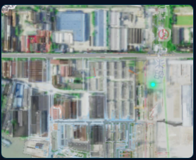
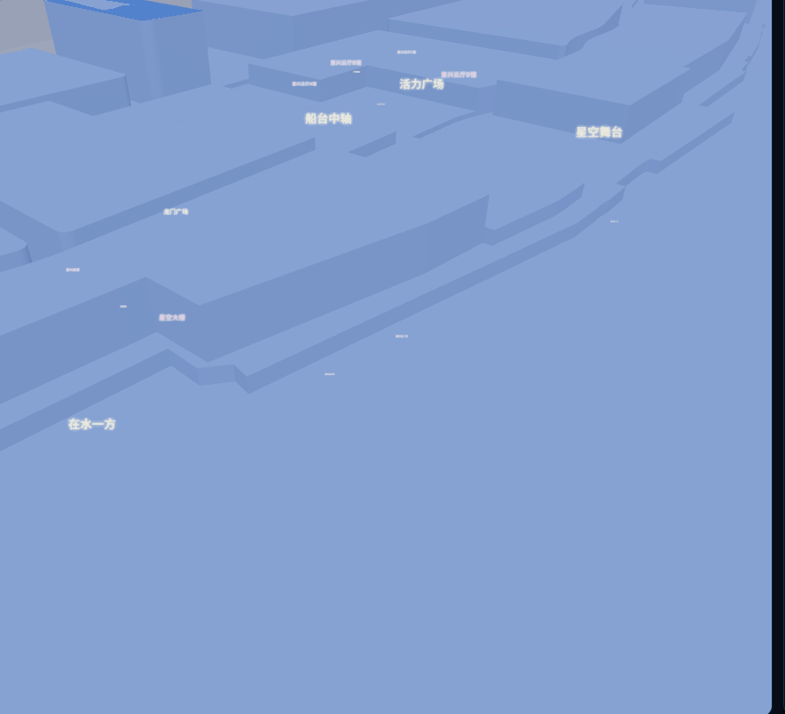

跳转至市政 AI 审查测试项目（外部系统，登录一次后自动保持会话）。
http://101.35.152.10:30000/bim-review/ai?projectId=184&projectName=市政AI审查测试&businessType=MUNICIPAL_SNL
菜单与场景配置 · 项目与权限 · 网络策略 · 对接管理 · 主键冻结（α-0 平台配置口径；此页为弱入口，不出现在主导航）
| 复兴岛 fxd | 3 台设备 · 管理员 2 / 调度员 3 / 观察员 5 |
| 华业大厦（内测） | 2 台设备 · 各环节先行试验 |
| 管理员 | 全部权限（含空间更新人工确认、系统设置） |
| 调度员 | 任务编排/下发、叫停与插入、识别复核 |
| 观察员 | 监控与看板只读 |
| 自动切换 | 信号 < -75dBm 降弱网 · 失联 30s 转离线自治 |
| 弱网 | 视频降 360p 仅关键帧 · 图片压缩 40% · 断点续传 |
| 离线 | 任务包预置自治执行 · 回连完整性校验（PL-09）补传 |
| 近场兜底 | LoRa/蓝牙急停通道（人防无信号区预案） |
| GO1 | → robot_001 · 清星小智 · 复兴岛 |
| MIRA | → robot_002 · Mira · 复兴岛 |
| PANTHER | → robot_003 · Panther · 复兴岛 |
| GO2 / CYBER | → 待注册 · 华业大厦 |
收敛现状"指令台 5 台 vs OpenAPI 2 台"的割裂（Phase 0 事项）。
主键口径：设备编号全局唯一（robot_id 冻结表），与 OpenAPI robot_00x 建立映射 —— 解决现状"指令台 5 台 vs API 2 台"割裂。
| 复兴岛 fxd | 上海量子城市 · 3 台设备 · 管理员 2 / 调度员 3 |
| 华业大厦（内测） | 公司所在大楼 · 2 台设备 · 各环节先行试验 |
| 管理员 | 全部权限（含空间更新人工确认、平台配置） |
| 调度员 | 任务编排/下发、接入管理、识别复核 |
| 观察员 | 监控与看板只读 |
单一任务制：临时任务执行期间原任务挂起。请选择临时任务完成后的恢复策略（操作员当场决定）：
| 协议 | WebRTC WHEP（werift） |
| 相机 | camera_001 · streams: visible / thermal |
| 跟踪视角 | 规划中（tracking_view_plan）：2D 局部关系图，与 robotApiStore 同频刷新 |
按 V17 口径：α-2 阶段底图更新为「点云比对 → 手动配准 → 人工确认」单版底图；版本管理 / 历史追溯 / 多机同步为 1.0 内容。
✅ 已实现 / 主路径可用
🚧 半成品 / mock 数据 / 已知割裂
❌ 占位 / 未启动（多为 1.0+ 范围）
标注依据：qs-robot-hub 代码实况 + docs/ 技术文档 + V17 版本口径，供 α 版设计基线讨论。
原型性质：α 版原型 V2 —— 在 V1（全量交互设计）基础上按 8-18 确认的「三层信息架构」重构：泛化层 + 场景包 + 系统设置。
导航结构（V3）：顶栏 = 泛化层 4 项（监控中心 /monitor、任务中心 /tasks、空间管理 /space、接入中心 /config）+ 场景层 3 项平铺（🏢 物业巡检 /property、🏗 工地质安 /site、🧭 园区导览 /guide；>3 时收敛为「场景工作台」下拉）+ 右上角 ⚙ 系统设置（/settings：菜单与场景配置 / 权限 / 网络策略默认 / 对接管理 / 主键冻结）。平台名「模舆机器人平台」，支持暗色/亮色双主题。空间评价、空间推荐下顶栏，可在系统设置中开启。
狗—任务模型：岗位能力集由搭载模组决定（如清星小智 = {巡检, 导引}），只能派能力集内任务；可绑定多场景任务但同时只执行单任务；排班制，可叫停插入临时任务（恢复策略操作员当场选：剩余点位不多→恢复继续 / 过半→顺延）；所有任务含临时任务必须命中预设模板。
任务流水线：① AI 任务识别（语义解析 + 岗位校验 + 模板命中）→ ② 路径规划（空间规则 + 历史经验 + 实时环境）→ ③ 三路径推荐（带语义理由 / 排除原因 / 经验标签：近 3 天 + 前一次执行情况，标注临时异常如渣土堆遮挡）→ ④ 确认下发 → ⑤ 数据回流。点位采集要求（停留/朝向/拍照数/点云）逐项可配。
网络模式：在线 / 弱网 / 离线 / 自动，逐机设置（面向复杂长程任务），离线机仅执行本地队列、拒收云端指令。
素材来源：proto_shots/ 真实运行截图裁切（3D 视口 / 导航地图 / Logo）。